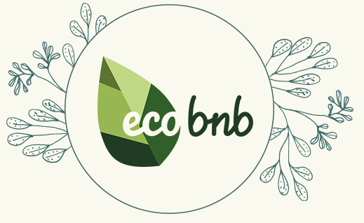

I soggiorni ecosostenibili, noti anche come turismo sostenibile o turismo verde, offrono vantaggi significativi sia per i viaggiatori che per l'ambiente. Questi soggiorni si concentrano sulla riduzione dell'impatto ambientale attraverso pratiche sostenibili come l'efficienza energetica, il riciclaggio e l'utilizzo di materiali ecologici. Ciò contribuisce a diminuire le emissioni di gas serra e il consumo di risorse naturali. Inoltre, promuovono la conservazione dell'ambiente e della biodiversità attraverso la tutela degli ecosistemi locali e coinvolgono le comunità locali, creando opportunità economiche e preservando il patrimonio culturale. L'educazione ambientale è parte integrante di questi soggiorni, che sensibilizzano i turisti ai problemi ambientali e offrono esperienze autentiche e connessioni con la natura. In sintesi, scegliere un soggiorno ecosostenibile permette di godere delle bellezze del mondo in modo responsabile e consapevole, contribuendo alla conservazione dell'ambiente e al coinvolgimento delle comunità locali.
Ecco dove poter trovare dei soggiorni ecosostenibili:
Ecobnb è una piattaforma che consente ai viaggiatori di trovare e prenotare online ogni tipo di struttura ricettiva rispettosa dell'ambiente.
.png)
La storia di Ecobnb nasce qualche anno fa con una community italiana dedicata al turismo sostenibile, ViaggiVerdi. Il progetto è stato poi finanziato da Seed Money 2014 della società Trentino sviluppo e dal co-finanziatore europeo EcoDots dedicato ai progetti di turismo sostenibile.Ecobnb promuove le località a ridotto impatto ambientale, con soggiorni in strutture ricettive ecosostenibili che offrono anche cibo biologico, vegano, weekend yoga e meditazione; inoltre, itinerari eco-friendly e spostamenti con mezzi non inquinanti, come biciclette o auto elettriche, per riscoprire il turismo lento e i luoghi autentici. L'obiettivo di Ecobnb è di produrre il 0% di emissioni di CO2 e 100% di energia pulita; per fare questo, persino i loro server sono alimentati al 100% da fonti di energia rinnovabile!.